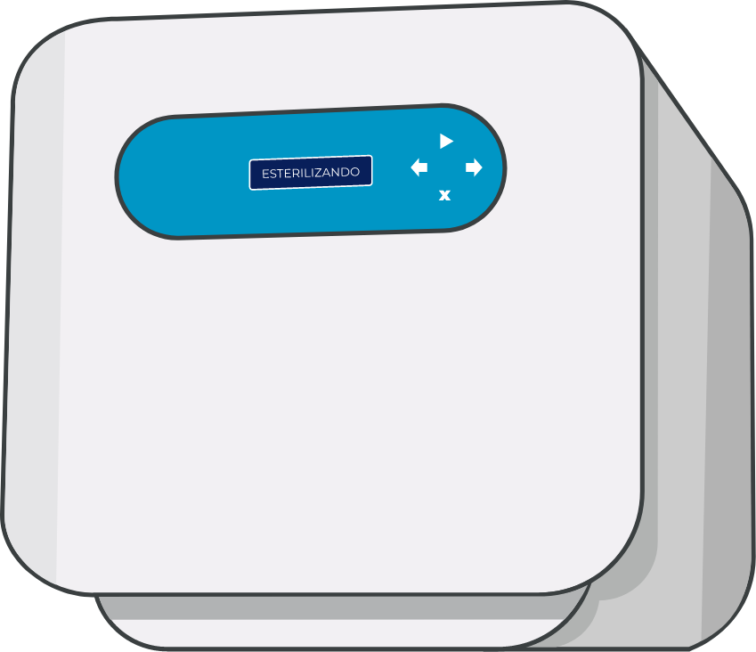

Equipamento de apoio
Equipamento ou sistema inclusive acessório e periférico que compõe uma unidade funcional, com características de apoio à área assistencial. São considerados equipamentos de apoio: cabine de segurança biológica, destilador, deionizador, liquidificador, batedeira, banho-maria, balanças, refrigerador, autoclave, dentre outros;
